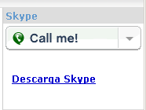
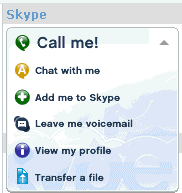

call1.png
call2.png
call3.png
call4.png
call5.png
call6.png
call7.png
call8.png
Este bloque de Xoops permite acceder a las opciones de los usuarios que usan el programa Skype, de llamadas telefónicas a través de internet , voz sobre IP.
Para ello, evidentemente has de tener instalado el programa, que puedes traerte de la zona de descargas de Skype.
1- Instalar el bloque.
Sigue los siguientes pasos:
2- Personalizar el bloque:
Hay 3 versiones del bloque. Las verás en /skype/extras/blocks/. Para elegir una de ellas, copia el fichero correspondiente, renombrándolo a skype.php en skype/blocks/skype.php. Por defecto viene instalado con skype1.php. Dichas versiones son
|
¡Llámame!
Descarga Skype
|
|  |  |
3- Añadir tu nombre de contacto de Skype.
Edita cada uno de los ficheros skipe1-2-3.php y busca la linea donde aparece:
|
/***** Here your user name in Skype *****/ $skype_user = "name_skype_user"; |
y cámbiala de tal manera, que si tu nombre es "pepitogrillo", ha de quedar así... y ¡fíjate bién en respetar las comillas y el punto y coma al final!
|
/***** Here your user name in Skype *****/ $skype_user = "pepitogrillo"; |
4- Personalizar las imágenes.
También puedes cambiar la imágen que se ve en la parte superior en los casos 1 y 3, copiando y renombrando alguna de las que vienen incluidas en /skype/extra/images/call?.png en /skype/images/call.png. Tienes las siguientes disponibles:
call1.png |
call2.png |
call3.png |
call4.png |
call5.png |
call6.png |
call7.png |
call8.png |
O puedes personalizar alguna de estas dos que hay en /skype/extra/images/more/call?_empty.png, incluyendo tu mismo el texto:
|
call_empty1.png |
call_empty2.png |
Y ahora... ¡a charlar!
Por un mundo mas humano, comunicado y sin fronteras.